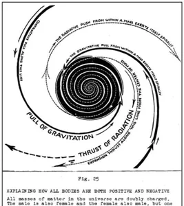

Part IV (Lessons 13–16): Mind, Motion & Man Must Know Man¶
Lesson 13: Prelude to Mind, Motion & Balance
Life itself is a transcendent adventure. At its best it is tremendously difficult. It is a huge mountain of unknown height whose top is hidden in an impenetrable veil which every man must climb. From that upward journey of life there is no escape for anyone, and no man knows what he must face on that lifelong climb up its tortuous paths Of blazed and unmarked paths which man must tread in light or dark–and in the dark oft lose his way and pitch headlong into stark tragedy which may be any man’s the very next moment after happiness and glory will seem to have been forever attained.

Lesson 14: How Bodies Are Made and Balanced
Once again I must talk to you as simply as though you were small children, for any thinking which is new MUST be presented simply.

Lesson 15: Man Must Know Man
There are many things which are not yet known about your Mind, your thinking and your body, which you should know. You have to live in a creative world as co-creator of it, and the more you know of how you create bodies with your thinking as Nature produces them, and the more you know about the principles which govern the creation of bodies the more you can control, not only your own body but your destiny.
Lesson 16: Answers to Students’ Questions (Part IV)
Lesson No. 12 began with these words from The Divine Iliad: “All questions are answerable in Light. Thou art Light. Thou canst answer them.”